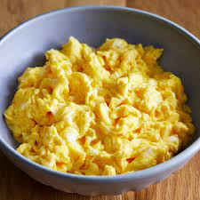

Fake Scrambled Eggs Recepie

Gear
- ring top cooker
- frying pan
- wooden spatula
- mixing bowl
- fork
Ingredeants
- 3 large eggs
- tspn of butter
- 125 ml of milk
- salt and peaper to taste
Execution
- place the frying pan on the low heat and add the butter
- brake the eggs in the mixing bowl and stir them
- empty the content of the mixing bowl on the frying pan
- when the mixture is hafl cooked (hard underneath and runnie on top) add the milk and start mashing with the spatula
- after the mash is done leave the eggs for another minute on the fire and then serve